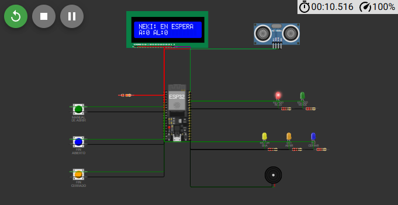

Problema
La supervisión constante y la apertura manual de accesos pueden resultar poco prácticas.
Conoce NEKI Hub, un prototipo de control de acceso que combina detección de presencia, apertura de puertas y comandos de voz en una sola solución tecnológica.
Una propuesta académica con visión de producto: hacer más práctico el control de accesos en pequeños negocios.
NEKI nace como una propuesta para mejorar la gestión de entradas en espacios comerciales. La idea es reducir la dependencia de la apertura manual de puertas y aportar una forma sencilla de visualizar los eventos de acceso.
Como empresa ficticia, NEKI Technologies presenta NEKI Hub, un prototipo integrador desarrollado con electrónica, programación y una interfaz web de presentación.
Nuestra misión es explorar cómo la automatización puede hacer más cómodos y organizados los accesos de un negocio.
La supervisión constante y la apertura manual de accesos pueden resultar poco prácticas.
Desarrollar y demostrar una propuesta de apertura automática y por voz.
Integrar sensores, ESP32, comunicación por USB e interfaz informática.
Construir una base que pueda evolucionar hacia sistemas de acceso para negocios.
Un sistema conceptual de control de acceso que conecta el entorno físico con decisiones automatizadas.
NEKI Hub integra un sensor de presencia, señales de aviso y un mecanismo de apertura conectado a un ESP32. La laptop puede enviar una orden de voz reconocida como «abrir puerta» a través de USB.
Detección de presenciaReconoce cuando alguien se aproxima al acceso.
Apertura automatizada y por vozAcciona la puerta según la programación del prototipo.
Señalización y registroUsa indicadores LED, aviso sonoro y conteo de entradas.
Opción mediante pulsadorPermite una orden de apertura local si hay alimentación eléctrica.
Desde el evento de entrada hasta la apertura y su registro: una cadena de decisiones coordinada.
Una demostración interactiva para explicar el concepto; separada de la simulación electrónica y del hardware real.
Prueba las distintas acciones previstas y observa el cambio de estado. Los eventos de este panel son ficticios para fines didácticos y no se envían al monitoreo real.
El video mostrará una visualización conceptual de la maqueta y su funcionamiento. No sustituye fotografías reales del montaje.
Configurar enconfig.js → media.demoVideo
Material audiovisual conceptual generado con inteligencia artificial; no debe presentarse como grabación del prototipo físico.
Esta sección incluirá el circuito de la maqueta en Wokwi, Tinkercad u otra herramienta. Se necesita el enlace público que proporcione el equipo de electrónica y la vista previa de las conexiones reales.

Este panel está preparado para recibir información auténtica del ESP32. No genera mediciones ni conteos inventados.
Esperando conexión con el dispositivo real.
| Hora | Evento | Fuente |
|---|---|---|
| No se han recibido eventos del prototipo. | ||
README.md.
Indicadores en blanco o desconectados significan que todavía no hay datos verificables. La demostración visual de la sección 5 no alimenta este panel.
Un espacio para documentar cada etapa con evidencias auténticas del trabajo del equipo.
Definición de la necesidad, objetivos, componentes y arquitectura del sistema de acceso.
Integración del ESP32, sensor, actuador, LEDs, zumbador y pulsador, seguida de las pruebas de software.
Comprobación de las aperturas, lectura de eventos y recopilación de fotos reales para la exposición.
El proyecto une algoritmos, programación y electrónica. El código oficial deberá quedar accesible en GitHub.
Representación del algoritmo, decisiones de apertura y condiciones de entrada.
Código PSeInt en GitHubTraducción del algoritmo a lenguaje Java conforme a las actividades del proyecto.
Código Java en GitHubCódigo del controlador para sensores, aviso, apertura y envío de datos por USB.
Código del ESP32 en GitHub
El repositorio debe incluir PSeInt/,
Java/ y Electronica/ junto con un
archivo README.
Conoce las funciones desarrolladas en NEKI Hub, las pruebas realizadas y sus posibles aplicaciones en pequeños negocios.
El sensor ultrasónico HC-SR04 detecta objetos cercanos y activa una alerta sonora mediante el buzzer cuando la puerta está en reposo.
Verificado en la simulación WokwiEl sistema permite iniciar la apertura de la puerta utilizando un pulsador físico conectado al ESP32, sin depender del control web.
Verificado en la simulación WokwiEl programa controla las etapas de apertura, espera y cierre. Los finales de carrera determinan los límites del movimiento.
Secuencia verificada en WokwiEl ESP32 recibe órdenes de apertura mediante Wi-Fi desde una aplicación web local. El sistema contempla el uso del comando de voz "Abrir puerta".
Integración física por confirmarSe realizaron pruebas funcionales en Wokwi utilizando una adaptación electrónica de NEKI Hub. Se comprobó la activación de la alarma, el pulsador manual, las señales de apertura y cierre, los finales de carrera y la recepción de una orden externa.
El firmware también incorpora el registro del número de aperturas y alarmas, junto con la consulta del estado mediante una interfaz HTTP.
Importante: la simulación representa las señales de control del motor; no reproduce físicamente el movimiento de la puerta real.
NEKI Hub está diseñado como una propuesta de automatización para pequeños comercios, espacios de atención y accesos supervisados.
Su sistema de apertura motorizada y monitoreo puede servir como base para futuras soluciones de control de acceso.
El prototipo requiere alimentación eléctrica. El control web funciona mediante la red Wi-Fi local y el sensor ultrasónico no identifica personas ni diferencia entradas de salidas.
Mejoras futuras: incorporar batería de respaldo, autenticación de usuarios, sensores adicionales y monitoreo remoto seguro.
Ocho integrantes unen conocimientos de programación, electrónica, investigación y comunicación.
Profesionales que acompañan y orientan el desarrollo del proyecto NEKI Hub.

NEKI Technologies es una marca ficticia creada para presentar nuestro proyecto integrador de nivelación.
Tecnología inteligente para proteger tu negocio.